Extreme Weather and Next-Day TSX Returns
1 Introduction
The last four decades have been hotter than any period since records began in 1850, with 2015–2024 constituting the warmest decade on record (UN, 2024). Climate change, however, extends well beyond rising average temperatures — it reshapes precipitation patterns, storm intensity, and the frequency of extreme events worldwide. In Ontario specifically, a report from the Climate Risk Institute found that mean annual temperatures increased by 1.0–1.5 °C between 1948 and 2012. The downstream consequences have already materialized: declining Great Lakes ice cover, a 9.7% normalized increase in the rain fraction of total precipitation, more volatile lake levels, fewer extreme cold days, and a significant rise in days exceeding 30 °C. These shifts manifest as floods, wildfires, and heatwaves of growing intensity and frequency.
The economic strain from these events is substantial and cascading. Disaster recovery drives up insurance premiums and diverts public expenditure; utilities absorb restoration costs and foregone revenue; energy firms face volatile demand swings; and retailers suffer disrupted foot traffic. Financial institutions are exposed less directly but no less materially — through mortgage portfolios on properties at elevated flood or fire risk, and through credit extended to small businesses whose operations are weather-sensitive (Canada.ca).
To investigate these economic impacts empirically, we use equity returns as a high-frequency proxy for economic activity. Financial data offer a practical advantage over slower indicators such as GDP revisions, insurance claims, or post-disaster damage surveys: stock prices are continuously recorded, publicly available, and react in near real-time to new information. If extreme-weather signals are detectable in daily returns, equity markets can function as a real-time sensor of physical climate impacts — complementing, rather than replacing, the broader toolkit of climate economics.
We focus on 15 TSX-listed companies with material Ontario exposure, spanning seven sectors: banks (TD, RY, CM, BNS, BMO), insurance (IFC, MFC, POW), utilities (FTS, EMA), energy (ENB, SU), telecom (BCE), real estate (REI-UN), and retail (L), benchmarked against XIU.TO (the iShares S&P/TSX 60 ETF). These are paired with daily climate observations from up to 178 Environment Canada weather stations across southern Ontario over the period 2008–2024 (114–151 stations are active in any given year).
We address two empirical questions:
- Regression: Does an extreme-weather day in Ontario produce a measurably different next-day log return for these tickers?
- Classification: Does extreme weather shift the probability that the next-day return is positive?
These questions carry significance beyond portfolio management. A validated weather–return signal provides empirical evidence that extreme weather creates measurable, near-term economic disruption — a link that can directly strengthen the case for climate adaptation investment at the provincial and municipal level. Infrastructure expenditures on flood defences, grid hardening, and urban heat mitigation routinely face political resistance on cost grounds; quantifying the next-day economic footprint of extreme events gives planners concrete, market-derived evidence to cite. As the Government of Canada notes, every dollar spent on climate adaptation saves up to $15 in long-term damage and mitigation costs — and a market-validated signal makes that calculus harder to dismiss.
2 Methods
2.1 Data acquisition
Weather data comes from the Meteorological Service of Canada GeoMet OGC API (api.weather.gc.ca). For each of the 178 stations active in the 2008–2024 range within our southern Ontario bounding box (lon \(\in [-83,-74.5]\), lat \(\in [41.5, 46.5]\)), we paginate through the /collections/climate-daily/items endpoint and collect six daily variables: mean, max, and min temperature (°C), total precipitation (mm), total snowfall (cm), and the maximum wind gust (km/h).
Stock prices are pulled with the yfinance package, which uses Yahoo Finance’s public endpoints. We download adjusted closing prices for the 15 tickers plus XIU.TO and convert to daily log returns \(r_t = \ln(P_t / P_{t-1})\).
2.2 Data missingness
| Dataset | Rows | Variable | % Missing |
|---|---|---|---|
| raw_weather (per-station daily) | 761,060 | max_gust | 63.38 |
| raw_weather (per-station daily) | 761,060 | total_snow | 47.92 |
| raw_weather (per-station daily) | 761,060 | mean_temp | 14.57 |
| raw_weather (per-station daily) | 761,060 | total_precip | 13.90 |
| raw_weather (per-station daily) | 761,060 | max_temp | 11.31 |
The raw weather data was collected from 178 stations in total, although there is fluctuation in how many are active in any given year (114–151) and how many variables they report on any given day. This is reflected in the per-station daily missingness, where snow and max gust are missing 48% and 63% respectively. Aggregating these variables across all reporting stations on each day removes the per-station missingness and produces a daily series that aligns cleanly with the trading data, which had 0% missingness.
2.3 Feature engineering
Extreme-weather flags are based on whole-period percentile thresholds: extreme_cold = mean temperature in the bottom 5%, extreme_heat = top 5%, extreme_precip = top 5% of total precipitation, extreme_wind = top 5% of maximum gust. extreme_any is set to 1 if any individual flag is up for that day.
We add continuous features in an attempt to capture more detail than the binary flags: standardised mean temperature (temp_z), a 5-day temperature anomaly (temp_5d_anom, the deviation of today’s mean from the trailing 5-day mean), standardised precipitation, and standardised wind. For the financial side, we include lagged returns (\(r_{t-1}\), \(r_{t-2}\)), a 5-day rolling mean and 5-day rolling volatility, and the contemporaneous market return (XIU.TO log return on day \(t\), controlling for the broad market factor). Calendar features (month, dow) capture seasonality and weekday effects, and one-hot sector dummies allow the models to capture differences across sectors. All rolling and lagged features use only information available at time \(t-1\) to avoid look-ahead bias. The final feature set has 21 predictors; the outcome is either the next-day log return for regression or its sign for classification.
2.4 Train/test split and model selection
To respect the time-series structure we use a chronological split: training data is everything before 2022-01-01, and the test set is 2022-01-01 onwards.
The four models are:
- Naive baseline — predict the training-period mean for every test observation.
- Random Forest — 200 trees,
max_features = sqrt(p),min_samples_leaf = 10, OOB scoring on. The classifier uses identical hyperparameters. - XGBoost — a 5-iteration randomized search over
max_depth ∈ {3,4,5,6},learning_rate ∈ {0.03, 0.05, 0.1},reg_lambda ∈ {1, 10},subsample ∈ {0.85, 1.0}, with 3 chronological CV folds and negative-RMSE scoring. The selected configuration wasmax_depth=4, learning_rate=0.05, reg_lambda=10, reg_alpha=0.1, with early stopping at roughly 80 boosting rounds. - GAM — smooth splines on the 7 continuous features (mean temp, total precip, max gust, 5-day temp anomaly, lagged return, 5-day vol, market return) plus a factor term for
extreme_any.
Reported test statistics are RMSE, MAE, and \(R^2\) for regression; accuracy and ROC-AUC for classification. We additionally show variable importance, partial dependence (XGBoost) and partial-effect curves (GAM), and a bias-variance curve.
3 Results
We split the results into two parts: the first reports descriptive findings directly from the data, and the second discusses the machine-learning models.
3.1 Weather
Table 1. Summary statistics for the four core daily weather variables, aggregated across all reporting stations (n = 6,210 days, 2008–2024).
| Variable | count | mean | std | min | 5% | 25% | 50% | 75% | 95% | max |
|---|---|---|---|---|---|---|---|---|---|---|
| Mean Temp (°C) | 6,210 | 7.71 | 10.63 | −22.28 | −10.63 | −0.57 | 8.11 | 17.22 | 22.48 | 28.56 |
| Total Precip (mm) | 6,210 | 18.18 | 19.11 | 0.00 | 0.80 | 4.70 | 12.60 | 25.18 | 55.00 | 240.00 |
| Total Snow (cm) | 6,210 | 3.58 | 7.15 | 0.00 | 0.00 | 0.00 | 0.00 | 4.00 | 19.00 | 71.00 |
| Max Gust (km/h) | 6,210 | 60.75 | 17.60 | 0.00 | 37.00 | 48.00 | 59.00 | 71.00 | 91.00 | 220.00 |
Table 1 summarises the distributions of the core weather variables. Mean daily temperature sits at 7.71 °C with a wide standard deviation of 10.63 °C. It follows a somewhat bimodal distribution as per Figure 1, with one mode just above 0 °C and another just under 20 °C. Both the table and figure show the 5% and 95% thresholds used to define extreme cold and extreme heat days, corresponding to −10.63 °C and 22.48 °C. As expected, precipitation, snow, and gust are all bounded below by zero and right-skewed.
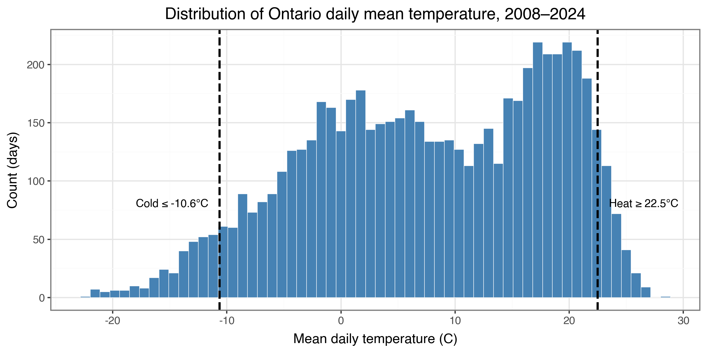
extreme_cold and extreme_heat. The bimodal shape reflects the seasonal split between winter and summer modes typical of southern Ontario.
We dive a bit deeper into extreme-weather days with Figure 2; no obvious trends are present at this 17-year time scale, although the longer-horizon trends documented in the climate literature (records starting in the 1800s) are well established.
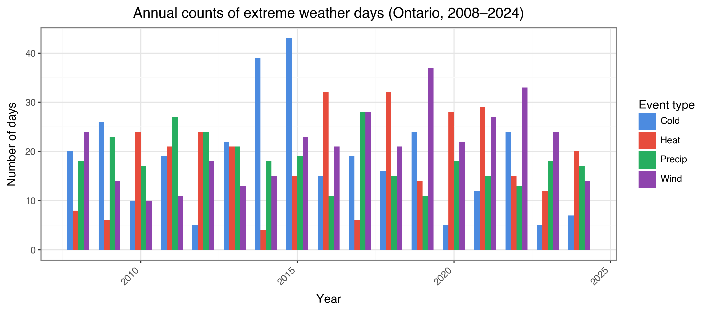
3.2 Returns
Table 2. Per-ticker mean daily log return (in %), annualized volatility (in %), and number of trading days (2008–2024).
| Ticker | Sector | Mean Daily Ret (%) | Ann. Volatility (%) | N |
|---|---|---|---|---|
| BCE.TO | Telecom | 0.018 | 20.92 | 4,261 |
| BMO.TO | Bank | 0.040 | 23.24 | 4,261 |
| BNS.TO | Bank | 0.030 | 22.40 | 4,261 |
| CM.TO | Bank | 0.043 | 23.57 | 4,261 |
| EMA.TO | Utilities | 0.040 | 17.59 | 4,261 |
| ENB.TO | Energy | 0.045 | 22.59 | 4,261 |
| FTS.TO | Utilities | 0.032 | 18.65 | 4,261 |
| IFC.TO | Insurance | 0.054 | 21.59 | 4,261 |
| L.TO | Retail | 0.052 | 19.83 | 4,261 |
| MFC.TO | Insurance | 0.019 | 33.32 | 4,261 |
| POW.TO | Insurance | 0.024 | 26.13 | 4,261 |
| REI-UN.TO | REIT | 0.021 | 22.78 | 4,261 |
| RY.TO | Bank | 0.046 | 21.89 | 4,261 |
| SU.TO | Energy | 0.009 | 38.48 | 4,261 |
| TD.TO | Bank | 0.035 | 22.07 | 4,261 |
Mean daily log returns range from 0.009% (SU.TO — Energy) to 0.054% (IFC.TO — Insurance), with a volatility ordering that roughly tracks Energy and Insurance as the most volatile (SU.TO at 38.5%, MFC.TO at 33.3%), Utilities and Retail at the low end (EMA.TO at 17.6%, FTS.TO at 18.7%, L.TO at 19.8%), and Banks somewhere in between (~22–24%).
Patterns emerge over time in Figure 3, where we clearly see the 2008 financial crisis and the 2020 COVID drawdown across every sector, confirming that the broad market factor dominates daily movement. We also see dispersion among sectors, with banks and retail compounding faster than utilities, telecom, or the real estate trust.
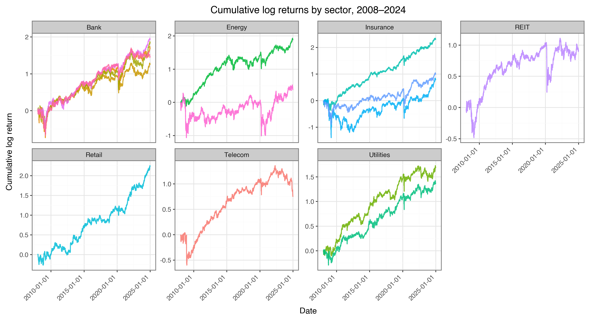
3.3 Extreme vs. normal days
Table 3. Mean next-day log return (in %) on normal vs. extreme-weather days, with the difference in basis points (1 bp = 0.01%).
| Ticker | Sector | Normal (%) | Extreme (%) | Diff (bp) |
|---|---|---|---|---|
| BCE.TO | Telecom | 0.0138 | 0.0330 | +1.92 |
| BMO.TO | Bank | 0.0328 | 0.0679 | +3.51 |
| BNS.TO | Bank | 0.0288 | 0.0346 | +0.58 |
| CM.TO | Bank | 0.0361 | 0.0719 | +3.58 |
| EMA.TO | Utilities | 0.0350 | 0.0630 | +2.80 |
| ENB.TO | Energy | 0.0491 | 0.0274 | −2.17 |
| FTS.TO | Utilities | 0.0216 | 0.0788 | +5.72 |
| IFC.TO | Insurance | 0.0461 | 0.0893 | +4.32 |
| L.TO | Retail | 0.0655 | −0.0060 | −7.15 |
| MFC.TO | Insurance | 0.0097 | 0.0593 | +4.96 |
| POW.TO | Insurance | 0.0177 | 0.0492 | +3.15 |
| REI-UN.TO | REIT | 0.0155 | 0.0472 | +3.17 |
| RY.TO | Bank | 0.0365 | 0.0842 | +4.77 |
| SU.TO | Energy | 0.0082 | 0.0161 | +0.79 |
| TD.TO | Bank | 0.0328 | 0.0461 | +1.33 |
Table 3 shows the difference in basis points between mean returns on normal days and on days following an extreme-weather event. Most differences are positive, with Utilities (FTS.TO at +5.72 bp, EMA.TO at +2.80 bp) and Insurance (IFC.TO at +4.32 bp, MFC.TO at +4.96 bp) showing a plausible economic mechanism — increased energy demand and premium revisions, respectively — while Retail (L.TO at −7.15 bp) is one of only two negative differences, potentially explained by reduced foot traffic or forced closures. We must keep in mind, however, that these differences are all well within the daily volatility of each ticker and are not formally tested for significance, so they should not be over-interpreted. Figures 4 and 5 reinforce this visually: distributions overlap almost completely in the histogram, and the interquartile boxes overlap entirely in the boxplots, showing that if a signal exists, it is small relative to noise.
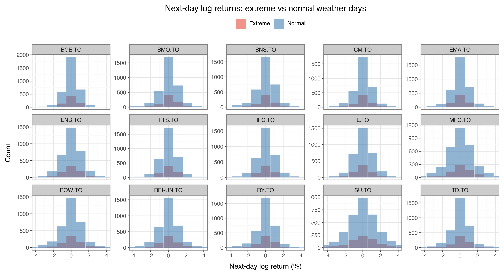
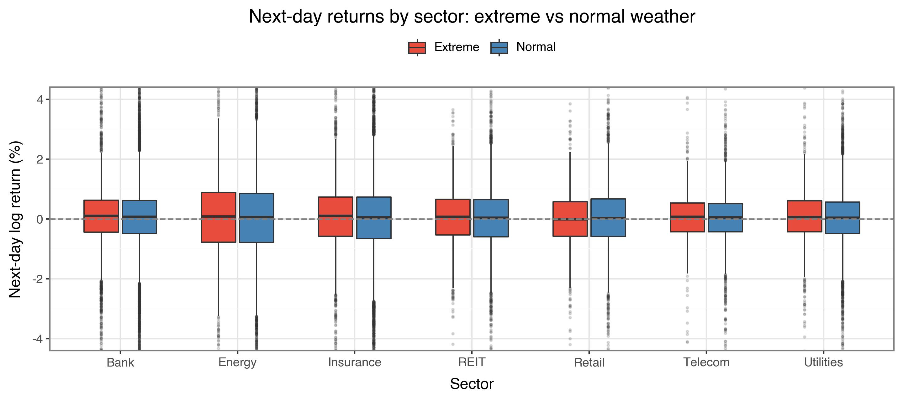
The temperature-vs-returns scatter in Figure 6 shows a flat slope with a 95% confidence interval containing zero, confirming there is no linear relationship at the aggregate monthly level.
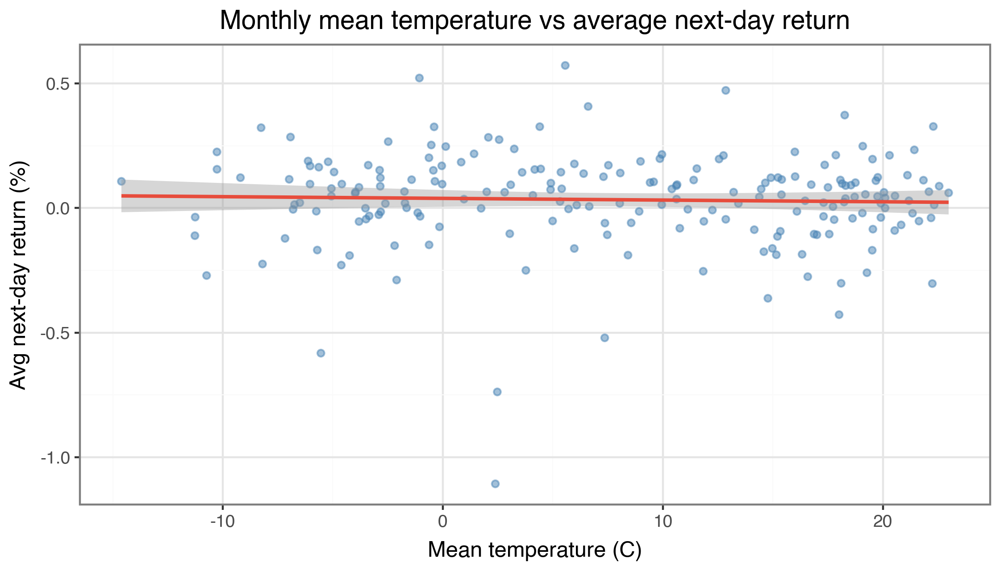
In the correlation heatmap (Figure 7) the strongest off-diagonal correlations are between weather features themselves (e.g. 0.28 between mean temperature and total precipitation, −0.17 between max gust and temperature). Notably, every weather feature has near-zero correlation with next-day market returns.
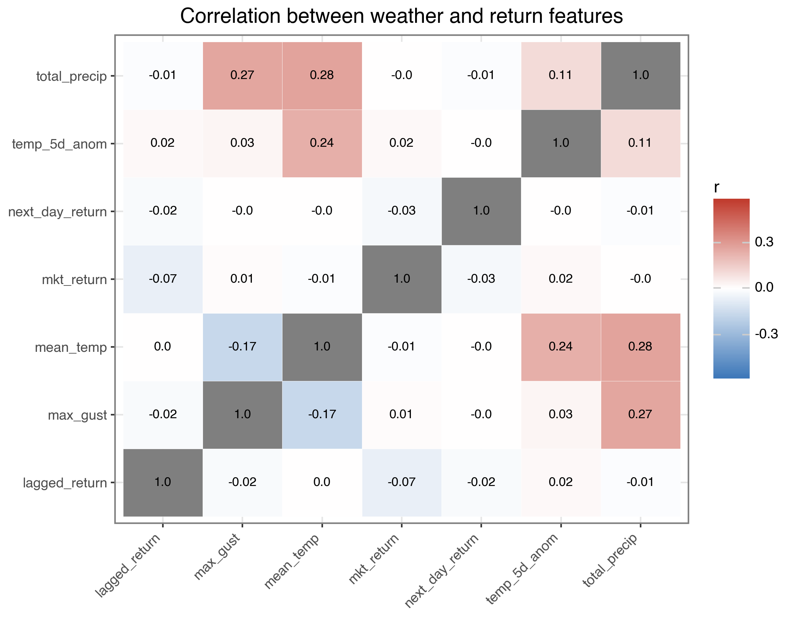
4 Models
The final feature matrix contained 21 columns: 8 weather features (mean temp, total precip, total snow, max gust, 5-day temp anomaly, and four binary extreme_* flags), 5 financial controls (lagged return, 2-day lagged return, rolling 5-day return, rolling 5-day volatility, market return), 2 calendar features (day-of-week, calendar month), and 6 sector dummies. To avoid look-ahead bias, the data was split chronologically rather than randomly: the test period (2022–2024) lies entirely after the training period (2008–2021).
For regression, four models were trained and compared on the same test set: a mean baseline, a Random Forest regressor (200 trees, max_features='sqrt', min_samples_leaf=10), a tuned XGBoost regressor (selected via 3-fold chronological CV: max_depth=4, learning_rate=0.05, reg_lambda=10, reg_alpha=0.1, with early stopping at roughly 80 rounds), and a GAM with smooth terms on each continuous feature. For classification, we used the encoded binary outcome next_day_return > 0 and trained Random Forest and XGBoost classifiers with equivalent hyperparameters, evaluated by accuracy and ROC-AUC.
4.1 Performance
Table 4. Test-set regression performance (test period: 2022-01-01 onward). OOB R² is reported only for the Random Forest, where it is computed within the training period on bootstrap-excluded observations.
| Model | Test RMSE | Test MAE | Test R² | OOB R² |
|---|---|---|---|---|
| Naive (train mean) | 0.01182 | 0.00852 | −0.0000 | — |
| Random Forest | 0.01194 | 0.00860 | −0.0203 | 0.286 |
| XGBoost | 0.01191 | 0.00857 | −0.0147 | — |
| GAM | 0.01320 | 0.00882 | −0.2460 | — |
The main finding is that no model beats the naive baseline on the test set. Test \(R^2\) is slightly negative for the tree-based models (Random Forest: −0.020; XGBoost: −0.015) and meaningfully negative for the GAM (−0.246), meaning predicting the train mean for every observation would have produced a lower test RMSE than any of the trained models. Two complementary explanations are at work.
First, Figure 8 (bias–variance trade-off for XGBoost) shows training RMSE falling monotonically from 0.0150 to 0.0130 as boosting rounds increase from 20 to 200, while test RMSE stays flat. This is the model fitting noise rather than signal, and it validates the early-stopping strategy used in the final fit.
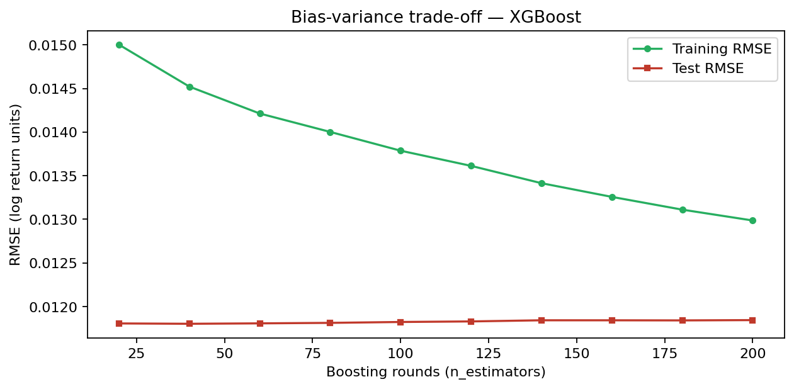
Second, the Random Forest’s out-of-bag \(R^2\) of 0.286 is dramatically higher than its test \(R^2\) of −0.020. The OOB estimate is computed on bootstrap-excluded observations within the 2008–2021 training period, so the gap to the test set primarily reflects distribution shift between training and test periods rather than overfitting alone — post-COVID monetary policy, interest-rate normalization, and inflation dynamics from 2022 onward have no comparable analogue in 2008–2021.
The same point appears in Figure 9, where predictions are tightly compressed near zero (vertical range roughly ±0.5%) while actuals span ±10%.
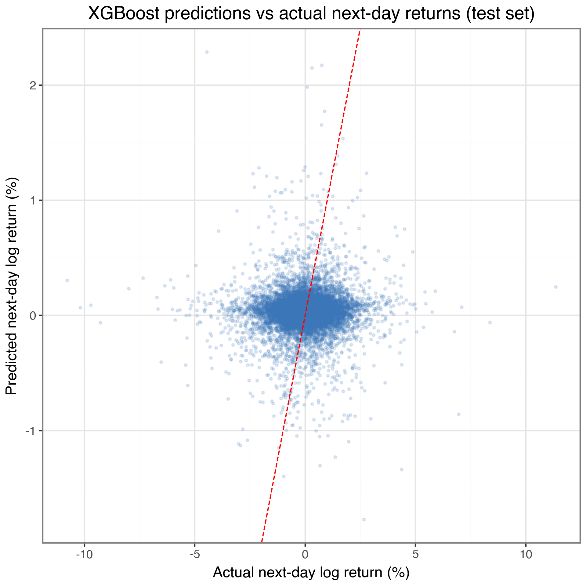
4.2 Variable importance
Although the models do not predict well, comparing variable importance across algorithms tells us which features they were trying to use.
Figures 10 and 11 (XGBoost and Random Forest) mostly agree on the ranking. In XGBoost, the top-importance feature is temp_5d_anom (5-day temperature anomaly, gain ≈ 0.106), followed by extreme_wind (0.102), mkt_return (0.085), and dow (day-of-week, 0.076). In Random Forest, mkt_return dominates (importance ≈ 0.182), followed by roll5_return (0.102), roll5_vol (0.100), temp_5d_anom (0.099), and lag2_return (0.090). The two models agree on three points: the market return dominates; lagged and rolling return features provide some utility; and at least one weather feature (the 5-day temperature anomaly) consistently ranks in the top 5. Sector dummies (sec_*) and binary extreme_* flags rank near the bottom in both models, indicating that sector differences are weak in this setup and that continuous features carry a higher proportion of whatever signal is available.
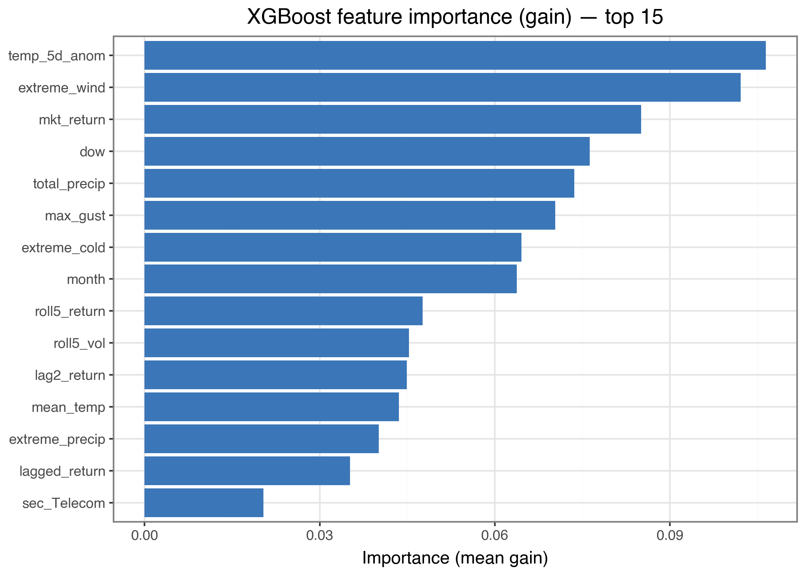
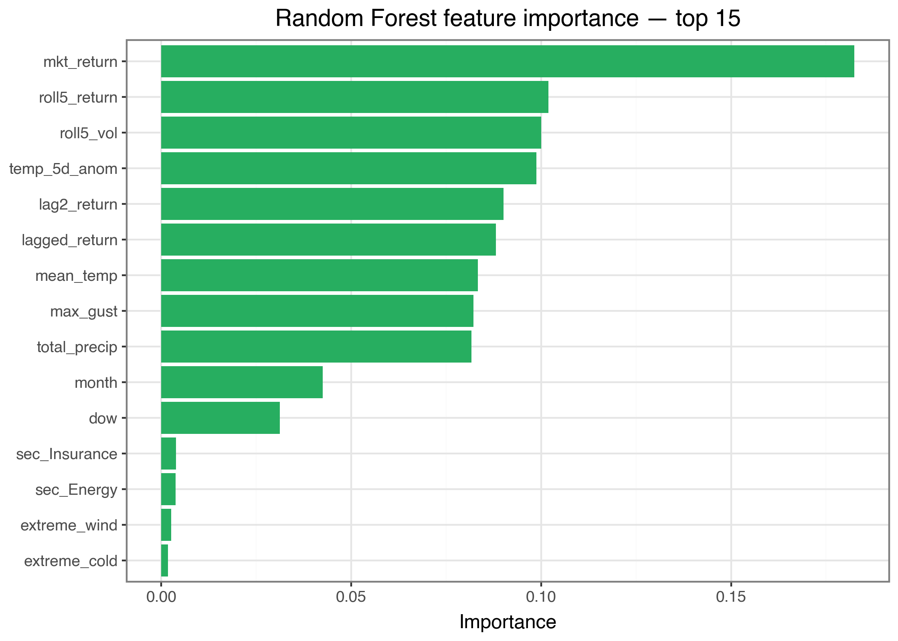
4.3 Partial dependence
Figure 12 (XGBoost partial dependence) shows the marginal effects for the six top features. The mkt_return panel has the most pronounced shape — approximately linear and strongly increasing. We can interpret this as a sharp increase in the market yesterday (say +1.5%) driving the model to predict next-day returns ~0.001 higher than at zero market return. The lagged_return panel shows a small negative slope, most likely indicating regression to the mean. The roll5_vol panel shows that returns predicted on high-volatility days are slightly higher (a risk premium). The other panels are essentially flat or noisy.
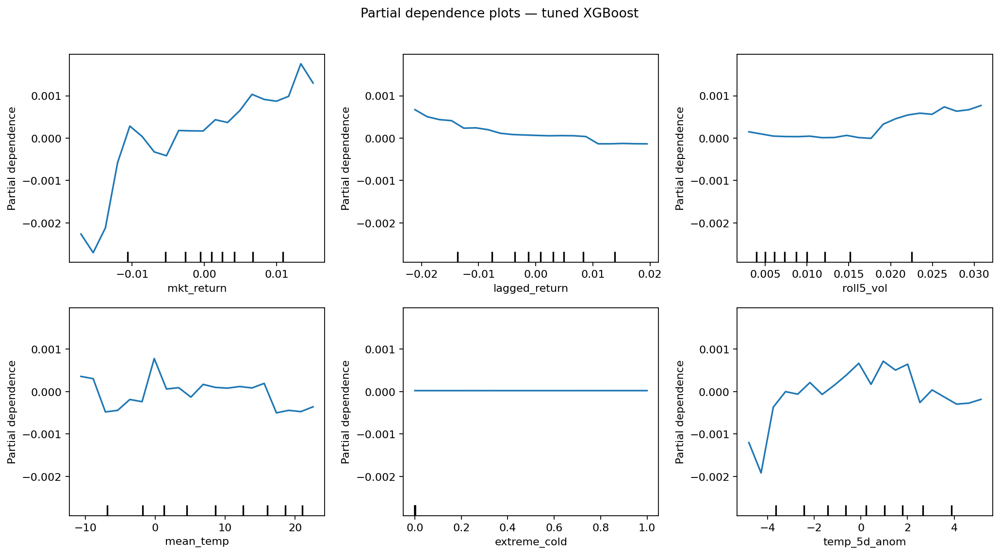
Figure 13 tells a slightly different story. The GAM’s smooth on mkt_return is monotonically negative with sharp curvature and a narrow confidence interval; roll5_vol shows a strong negative slope (high recent volatility predicts lower next-day returns); lagged_return is U-shaped, suggesting both very-negative and very-positive lagged returns predict positive next-day returns. The weather smooths (mean_temp, total_precip, max_gust, temp_5d_anom) are mostly flat with wide 95% bands that cover zero across nearly the full input range — only the extreme right tails (e.g. max gust >100 km/h) show any deviation, and even there the band is wide. The Extreme Day discrete-effect panel shows extreme days have a negative partial effect of ~−0.00015 (≈ −1.5 bp in log return) once continuous features are controlled for, which contradicts the descriptive Table 3 finding and reinforces that the table was capturing market-level patterns rather than weather-driven movement.
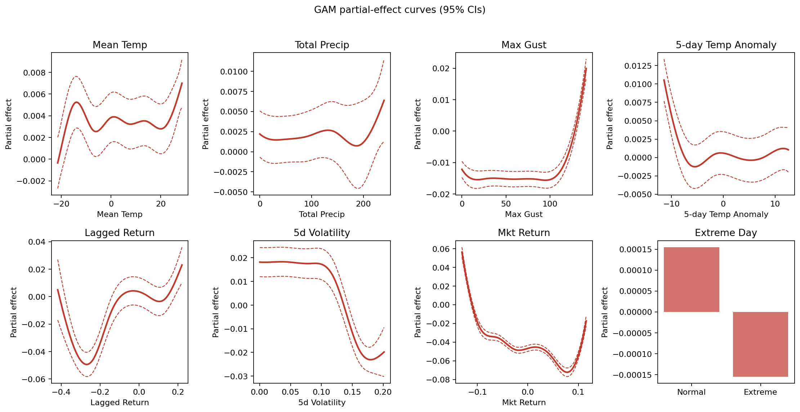
5 Summary of findings
Across all analyses the picture is consistent: there is a small, mechanically plausible association between extreme-weather days and slightly higher next-day returns for utilities, banks, and insurers (Table 3, +1 to +6 bp), and 5-day temperature anomalies appear in the top-5 most important features for both tree-based regressors. However, the weather signal is dominated by market-return and lagged-return features in every model, and is not strong enough for any model to outperform a naive train-mean predictor. Returns appear to be effectively unpredictable from this feature set on the daily horizon, and this null result is itself the answer to the research question: at the daily frequency, the relationship between Ontario weather and TSX-Ontario returns is too weak to be exploited.
5.1 Limitations
Most importantly, the daily horizon may not be the right approach. Extreme-weather damage may better manifest itself in quarterly earnings (insurance claims, utility restoration costs) than in next-day prices. A follow-up analysis at weekly, monthly, or longer horizons would likely surface stronger or different effects. Second, our aggregation of weather averages out spatial variation that may matter for specific firms — a province-wide mean conceals the localized storm or heat dome that actually disrupts a given facility. Third, each company varies in its exposure to Ontario specifically; some of these names have material operations elsewhere in Canada or internationally, diluting any Ontario-weather signal in their returns.